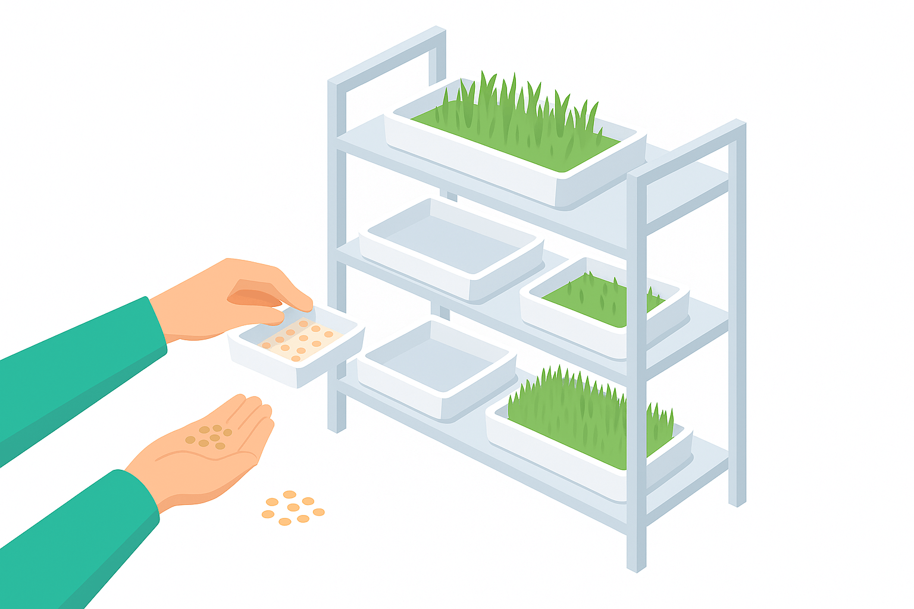
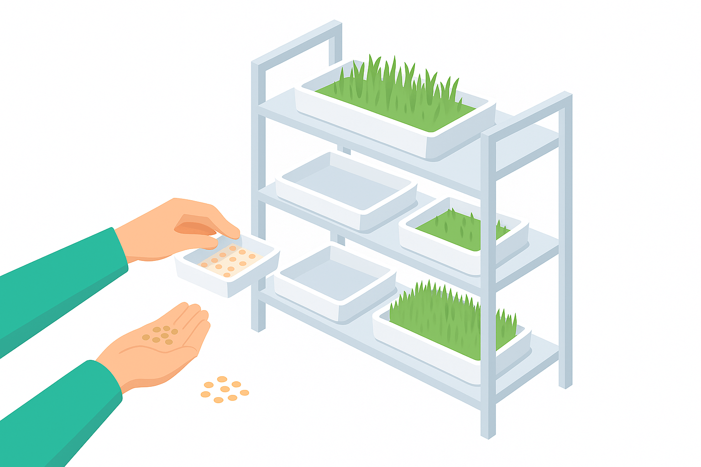

Validé par 50 éleveurs sur le terrain
Problèmes d'Approvisionnement
0%
Ont eu des difficultés à s'approvisionner en aliment cette année, principalement à cause de la volatilité des prix.
Le Coût Avant Tout
0%
Citent un "prix abordable" comme le critère N°1 pour choisir un aliment de qualité.
Besoin de Stabilité
0 j/an
La production continue est le bénéfice le plus attendu de l'hydroponie (cité par 76% des sondés).
« On veut que ce projet aille vite pour soulager la cherté de l’aliment. »– Éleveur participant à notre enquête, Région Marrakech-Safi
Eau Optimisée
Réduction de 70% de consommation d'eau
Production Régulière
Récoltes planifiées toute l'année
Qualité Contrôlée
Protocole sanitaire HACCP
Simplicité
Interface web Intuitive
Découvrez notre technologie
Voir la démo interactive
Pour qui ?
Éleveurs laitiers
Gestion de l'alimentation des vaches
Fermes d'engraissement
Fourniture de fourrage de qualité
Exploitations maraîchères
Optimisation de la production
Centres de formation
Enseignement de l'agriculture moderne
Comment ça marche ?
1
Installation
2
Planification
3
Suivi
4
Récolte
5
Analyse
 
